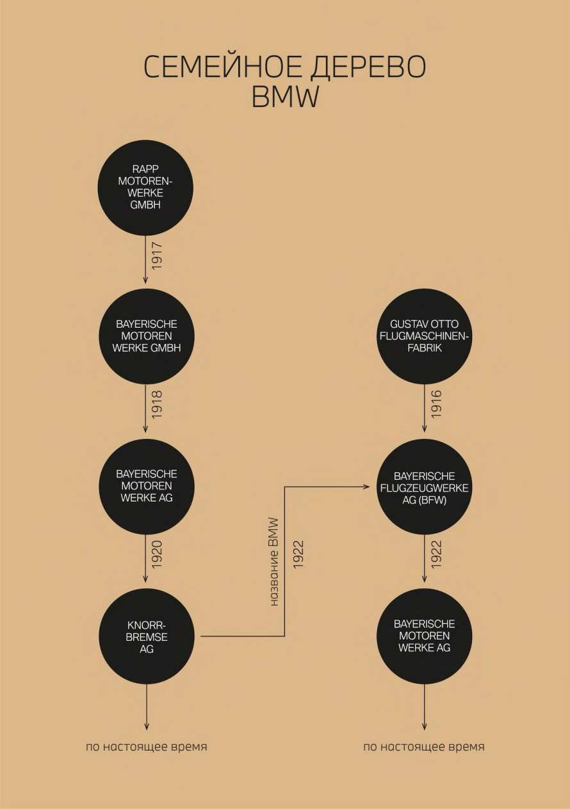
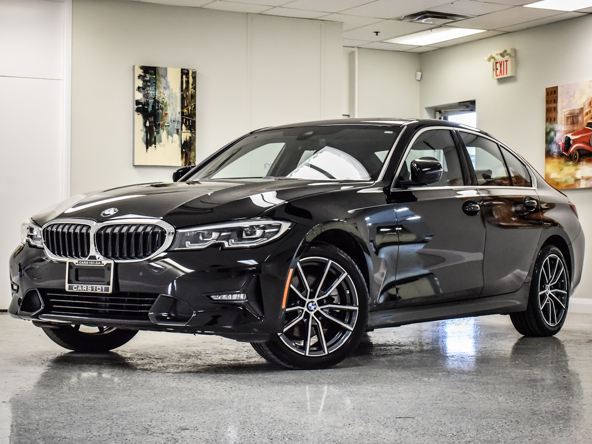
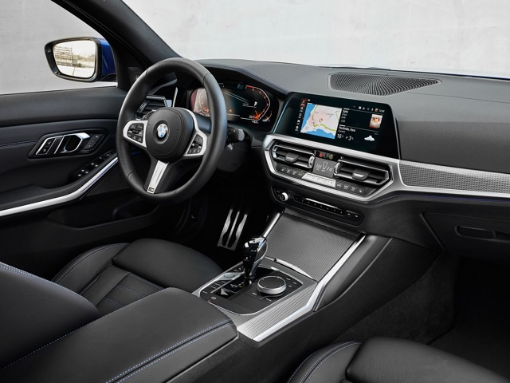
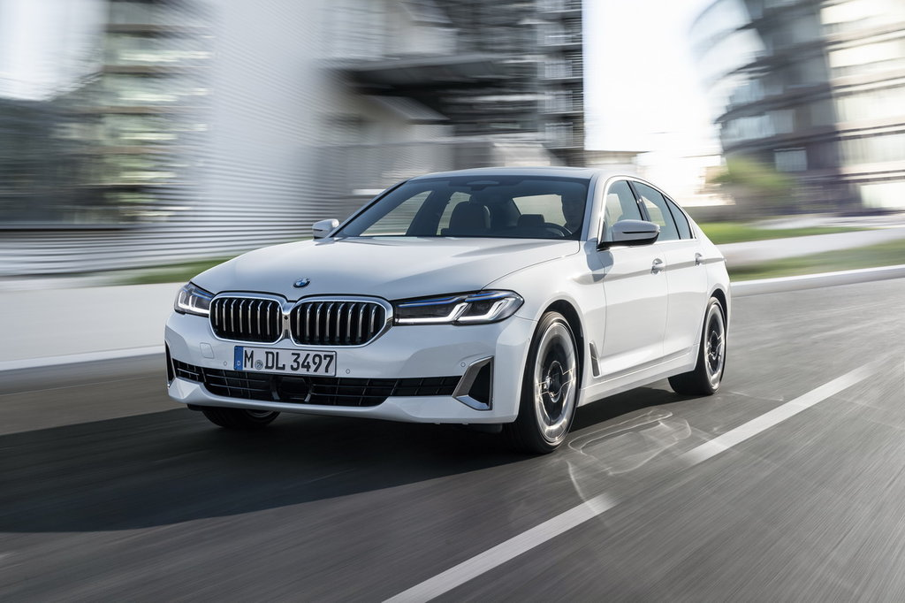
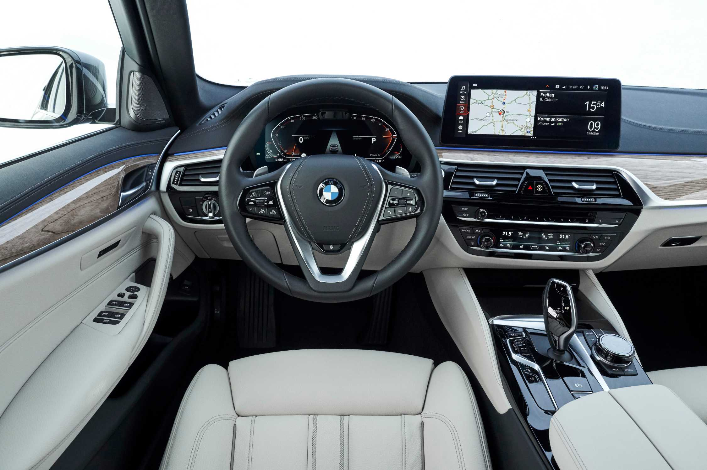
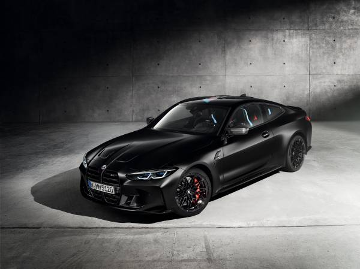
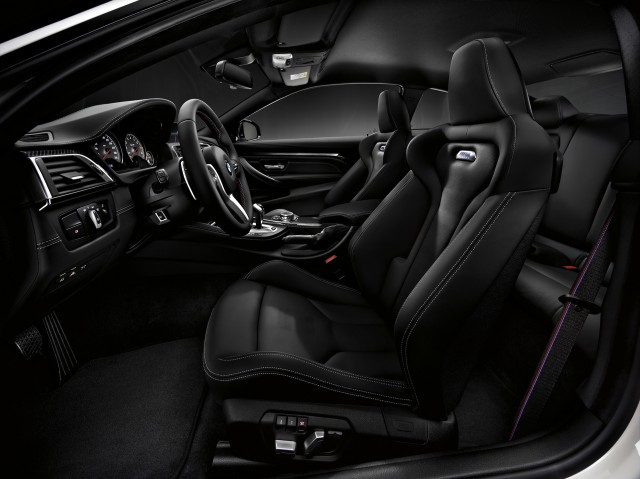
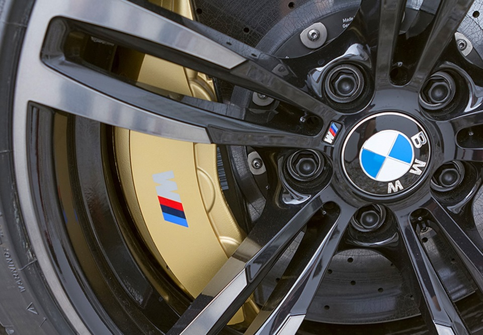
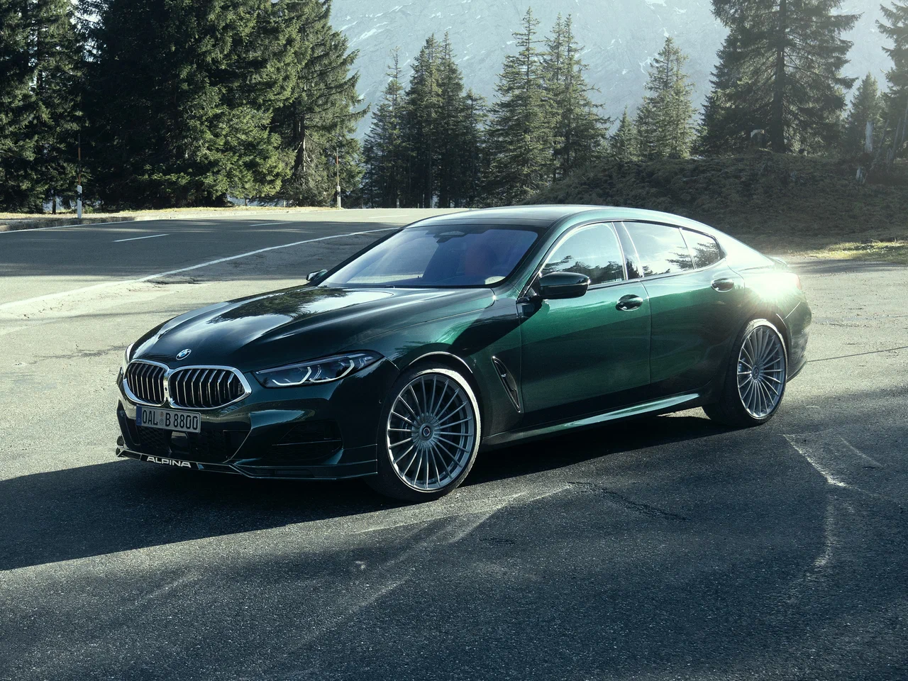
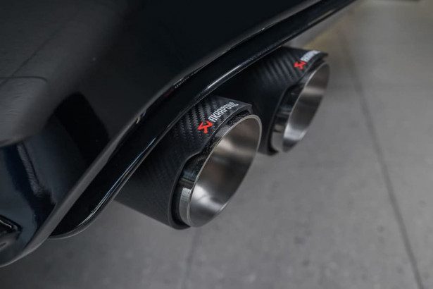

<html>
    <head>
<title>BMW</title>
<meta http-equiv="content-type" content="html/text" charset="utf-8">
<!--Фон сайта-->
<style>
    body {
      background-color:rgb(248, 248, 233);
      background-repeat: repeat;
      background-size: cover;
      font-family: 'Lucida Sans', 'Lucida Sans Regular', 'Lucida Grande', 'Lucida Sans Unicode', Geneva, Verdana, sans-serif;
    }
  </style>

        <!--Расположение текста по центру-->
 <style>
    .text-center {
       text-align: center;
       
     }
     </style>
<style>
    table { 
        border-collapse: collapse;
        width: 80 px;
    }
    </style>
    <style>
     th, td{
        border:1px solid black;
    }
</style>
<style>
    .pic {
     display: block; /* Блочный элемент (для старых браузеров) */
     text-align: center; /* Выравнивание по центру */
     font-style: italic; /* Курсивное начертание */
     margin-top: 0; /* Отступ сверху */
     margin-bottom: 5px; /* Отступ снизу */
     color: #666; /* Цвет подрисуночной подписи */
    }
   </style>
     <style>
        .left {
         float:left; /* Выравнивание по левому краю */
         margin: 7px 7px 7px 0; /* Отступы вокруг картинки */
        }
        .right  {
         float: right; /* Выравнивание по правому краю  */ 
         margin: 7px 0 7px 7px; /* Отступы вокруг картинки */
        }
       </style>
        <style>
            aside {
             background: #f0f0f0;
             padding: 10px;
             width: 1000px;
             float: center ;
            }
            </style>
    </head>
</html>

<body>
<h1 class="text-center">Сравнение моделей BMW</h1>
<h2>Меню страницы:</h2>
<p>
    <ul>
        <li><a href="#history">История BMW</a></li>
       <li><a href="#mod">Модели BMW</a></li>
        <li><a href="#compare">Сравнительная таблица</a></li>
        <li><a href="#review">Отзывы владельцев</a></li>
       <li><a href="#drag">Драг-заезды</a></li>
        <li><a href="#interest">Узнайте больше</a></li>
        
        
    </ul>
    <h2><div id="history">История BMW</div></h2>
    <p> 
        Аббревиатура BMW расшифровывается как «Bayerische Motoren Werke GmbH», что переводится как «Баварские Моторные Заводы». В этом имени скрывается отсылка к родине компании — Баварии. Также оно указывает на изначальную линейку продукции BMW: двигатели для различных задач. 
<br><br>Аббревиатура BMW расшифровывается как «Bayerische Motoren Werke GmbH», что переводится как «Баварские Моторные Заводы». В этом имени скрывается отсылка к родине компании — Баварии. Также оно указывает на изначальную линейку продукции BMW: двигатели для различных задач.
У истоков современной BMW AG стоит небольшая компания Rapp-Motorenwerke GmbH, начавшая производить авиационные двигатели в 1913 году. В ходе Первой мировой войны Rapp являлась поставщиком военно-воздушных сил Германской империи. В то время автомобили встречались редко. Если Вам было необходимо отправиться в дальнее сухопутное путешествие, единственным вариантом был поезд.
<br><br> Штаб-квартира Rapp Motorenwerke находилась в столице Баварии, Мюнхене. Там же располагался и завод Gustav Otto Flugmaschinenfabrik, на котором двигатели устанавливались на самолеты. Когда в 1916 году компания Густава Отто обанкротилась, она была переименована в Bayerische Flugzeugwerke AG (BFW). Вскоре после этого Rapp тоже изменила свое название. В 1917 году она получила имя Bayerische Motoren Werke GmbH. Напоминание о компании Rapp, лежавшей у истоков BMW, до сих пор сохраняется в логотипе бренда.
    </p>
</p>
<h2><div id="mod">Модели</div></h2>
<p>Для сравнения были выбраны следующий модели BMW: 
    <nav>
    <ol>
        <li>
           <a href="#1"> BMW 330i 2020 Restyling </a>
        </li>
        <li>
            <a href="#2">BMW 530d 2020 Restyling </a>
        </li>
        <li>
           <a href="#3"> BMW M4 Competition 2020 Restyling</a>
        </li>
    </ol>
    </nav>
</p>

<p>
    <h2><div id="1">BMW 330i 2020 Restyling</div></h2>
    <section>
        <h3>Общие сведения</h3>
        <p>
            BMW 3 G20 — уже седьмое поколение автомобиля,
которое приносит концерну четверть всех продаж. В нем прослеживается тенденция увеличения авто: это самая крупная «трешка» в истории. По сравнению  с рестайлингом 6 поколения она стала длиннее на 8,5 см, шире чуть больше чем на 1,5, а колесная база увеличилась на 4 см. 
<br>Модель конкурирует с Mercedes-Benz C-class — это основной соперник по объемам продаж, а также с Audi A4, Lexus IS и Jaguar XE. И в схватке «немцев» баварец побеждает. В  2020 году россияне купили 4230 этих авто, а в начале 2021 объем продаж «трешки» увеличился на 43%. C-class в тот сложный год продавался в два раза труднее, в России удалось реализовать 2549 автомобилей. А у А4 дела были совсем плохи: вместе с версией Allroad продалось всего около 200 машин.
<br>
Рестайлинг прошлой генерации не мог похвастать какими-либо заметными изменениями во внешности. Тогда обновления коснулись линейки моторов — версии N заменили на прогрессивные B. А вот седьмое поколение стало уже практически другим автомобилем.

С чем придется смириться — так это с отсутствием фирменных «ангельских глазок». G20 стала первой BMW 3, которая лишилась узнаваемой круглой оптики. Это грустная потеря, но инженеры и дизайнеры хорошо поработали и смогли компенсировать утрату.

Как изменился внешний вид BMW 3 в версии G20:
<ol>
<li>кузов приобрел более резкие и выраженные линии</li>
<li>крылья и бамперы стали шире, из-за чего автомобиль кажется более приземистым при той же высоте</li>
<li>решетки радиатора увеличились, и их соединение с фарами стало более плавным. Визуально решетки и оптика стали выглядеть как части единого целого</li>
<li>воздухозаборники увеличили, расширили и придали им другую форму</li>
<li>фары сделали шире, а края немного загнули вверх</li>
</ol>
«Тройка» стала больше, но все равно выглядит компактно. Она сохранила спортивный вид, но выглядит собраннее и современнее предшественника. Основные черты BMW 3 — укороченный и заниженный передний свес, немного смещенная назад кабина  — остались на месте. Это все еще узнаваемый автомобиль, бренд которого нельзя спутать. 
<br><a href="https://youtu.be/UPaJ9aoj-qY?si=iPHW-sCyOj7Qvp2f" target="_blank"><b>Обзор на YouTube</b></a>       
</p>
    </section>
    <figure class="pic">  
        
         
        <figcaption>BMW 330i 2020 Restyling</figcaption>
    </figure>

    <h2><div id="2">BMW 530d 2020 Restyling</div> </h2>
    <section>
        <h3>Общие сведения</h3>
        <p>
         BMW 5 серии воплощает собой современный седан бизнес-класса. Модель отличается стильными атлетичными формами, динамичным силуэтом и лаконичным дизайном.
<br><br>Гладкие поверхности и четко очерченные контуры формируют элегантный экстерьер современного и высокотехнологичного автомобиля. Инновационные технологии и спортивное оснащение создают изысканный и функциональный интерьер.
<br><br>Невероятная динамика и инновационные технологии BMW 5 серии дополняют высочайший уровень комфорта, безопасность и, самое главное, непередаваемое удовольствие от вождения, которое автомобиль дарит как в каждодневных, так и в дальних поездках.
<br><br>Спортивные характеристики и ощущение уверенности BMW 5 серии выведены на принципиально новый уровень — в первую очередь за счет традиционных пропорций BMW: длинной колесной базы, удлиненного капота и плавной линии крыши. Точные контуры кузова создают удивительный контраст с обтекаемыми поверхностями уменьшенной площади, формируя современный и лаконичный образ. Особенную динамичность передней части кузова придают характерная решетка радиатора и лазерные фары BMW Laserlight, подчеркивающие инновационный характер модели. Незаметный переход между передними фарами и решеткой радиатора дополнительно подчеркивает ширину автомобиля и создает ощущение исключительной элегантности и статусности, которое дополнительно усиливается при взгляде на боковую и заднюю части кузова — вплоть до патрубков выхлопной системы свободной формы, гармонично интегрированных в задний бампер. Вместе эти детали формируют стильный и при этом спортивный образ.
<br><a href="https://youtu.be/_HmsfXIFhdU?si=TdUS_csHkKBparMW" target="_blank"><b>Обзор на YouTube</b></a>         
</p>
    </section>
        <figure class="pic">  
               
               
             <figcaption> BMW 530d 2020 Restyling </figcaption></figure>

     <h2><div id="3">BMW M4 Competition 2020 Restyling</h2></div>
    <section>
        <h3>Общие сведения</h3>
        <p>
            BMW M4 Competition Coupe является самым динамичным представителем линейки автомобилей M BMW 4 серии Coupe. Это спортивное купе, оснащенное высокопроизводительным рядным 6-цилиндровым бензиновым двигателем BMW M TwinPower Turbo мощностью 510 л.с. и многочисленными технологиями привода и ходовой части, позаимствованными из автоспорта, обеспечивает фирменные динамические характеристики M высочайшего уровня. Опциональный полный привод M xDrive* с активным дифференциалом M гарантирует максимальную динамику как в повседневной эксплуатации, так и на гоночной трассе. Выразительный язык дизайна передней, задней и боковых частей автомобиля в сочетании с опциональными особыми элементами внешней и внутренней отделки M Carbon подчеркивает атлетичный характер спортивного купе.
            <br><a href="https://youtu.be/JyAjgy56zhU?si=iUWUYpImr6xH6WDA" target="_blank"><b>Обзор на YouTube</b></a> 
        </p>
    </section>
             <figure class="pic">  
        
        
        <figcaption>BMW M4 Competition 2020 Restyling</figcaption>
             </figure>
</p>
<p>
      <br><aside><time>24 августа 2024 года</time> я посетила мероприятие "BMW FEST-24". Если вам интересно, можете посмотреть пару <a href="BMWFEST.html" target="blank" alt="Фотогалерея BMW FEST" title="Фотогалерея" width="500" height="300">фотографий</a> &#129392;.</aside>
</p>
<!--Таблица сравнения-->
<caption><b><font size="5"><div id="compare">Сравнительная таблица</div></font></b></caption>
<table>
    <thead>
<tr><th>Характеристика</th>
<th>BMW 330i 2020 Restyling</th>
   <th> BMW 530d 2020 Restyling </th> 
    <th>BMW M4 Competition 2020 Restyling</th>
</tr>
</thead>
<tbody>

<td>Тип коробки</td>
<td>Автомат</td>
<td>Автомат</td>
<td>Автомат</td>
</tr>
<tr>
    <td> Привод</td>
    <td>Полный (4WD)</td>
    <td>Полный (4WD)</td>
    <td>Задний (FR)</td>
    </tr>

    <tr>
<td> Количество передач</td>
<td>8-ступенчатая коробка</td>
<td>8-ступенчатая коробка</td>
<td>8-ступенчатая коробка</td>
</tr>
<tr> 
    <td> Габариты</td>
    <td><ol>
        <li>Длина 4633 см</li>
        <li>Ширина 1811 см</li>
        <li>Высота 1429 см</li>
    </ol></td>
    <td><ol>
        <li>Длина 4963 см</li>
        <li>Ширина 1868 см</li>
        <li>Высота 1479 см</li>
    </ol></td>
    <td><ol>
        <li>Длина 4671 см</li>
        <li>Ширина 1870 см</li>
        <li>Высота 1386 см</li>
    </ol></td>
    </tr>
    <tr>
    <td> Объём багажника</td>
    <td>480 л.</td>
    <td>530 л.</td>
    <td>440 л.</td>
    </tr>
    
    <tr>
        <td> Рейтинг краш-тестов</td>
        <td>5/5<progress value="5" max="5"></progress>
        <a href="https://www.youtube.com/watch?v=aBAIytptrBQ">Euro Cap</a>
        </td>
        <td>5/5<progress value="5" max="5"></progress>
            <a href="https://www.youtube.com/watch?v=vxscdMpJIYI">Euro Cap</a>
            </td>
            <td>Нет данных по Euro Cap
                </td>
        </tr>
    <tr>
    <td> Наличие ABS, ESP, Подушки безопасности</td>
    <td>
        <ol>
            <li>АВС - есть</li>
            <li>ESP - </li>
            <li>Подушки безопасности - есть</li>
        </ol>

    </td>
    <td> <ol>
        <li>АВС - есть</li>
        <li>ESP - </li>
        <li>Подушки безопасности - есть</li>
    </ol>
</td>
    <td> <ol>
        <li>АВС - есть</li>
        <li>ESP - </li>
        <li>Подушки безопасности - есть</li>
    </ol>
</td>
    </tr>
    <tr>
    <td> Расход топлива (средний) </td>
    <td>6,5 литра</td>
    <td>5,0 литра</td>
    <td>10,2 литра</td>
    </tr>
    <tr>
    <td> Максимальная скорость</td>
    <td>250 км/ч</td>
    <td>250 км/ч</td>
    <td>250 км/ч</td>
    </tr>
    <tr>
    <td> Разгон 0-100 км/ч</td>
    <td>5,5 с.</td>
    <td>5,4 с.</td>
    <td>3,9 с.</td>
    </tr>
    <td> Начальная цена модели</td>
    <td>31 380$</td>
    <td>51 560$</td>
    <td>81 000$</td>
    </tr>
    <tr>
        <td> Наличие Wi-Fi/Bluetooth</td>
        <td>Есть</td>
        <td>Есть</td>
        <td>Есть</td>
        </tr>
        <tr>
            <td> Тормозная система</td>
            <td>Дисковая вентилируемая</td>
            <td>Дисковая вентилируемая</td>
            <td>Дисковая вентилируемая/ Карбон-керамика</td>
           
            </tr>
            <tr>
                <td> Наличие систем предотвращения столкновений</td>
                <td>Нет информации</td>
                <td>Нет информации</td>
                <td>Нет информации</td>
                </tr>
                <tr>
                    <td> Гарантийсный срок</td>
                    <td>2 года независимо от пробега</td>
                    <td>2 года независимо от пробега</td>
                    <td>2 года независимо от пробега</td>
                    </tr>
</tbody>
</table>
<br><table>
    <caption><font size="3"><b>
      Рейтинг краш-тестов
   </b> </font></caption>
    <colgroup>
      <col />
      <col span="2" class="batman" />
      <col span="2" class="flash" />
    </colgroup>
    <tr>
      <td></td>
      <th scope="col">BMW 330i 2020 Restyling</th>
      <th scope="col">BMW 530d 2020 Restyling</th>
      <th scope="col">MW M4 Competition 2020 Restyling</th>
    
    </tr>
    <tr>
      <th scope="row">Ссылка</th>
      <td><a href="https://www.euroncap.com/en/results/bmw/3+series/38531">330i</a></td>
      <td><a href="https://www.euroncap.com/en/results/bmw/5+series/50186">530d</a></td>
      <td>M4 - нет данных</td>
    </tr>
  </table>
</p>
<p><font size="3"><b>Попробуйте все удобства сайта bmw.ru:</b></font>
    <ol>
        <li><a href="https://configure.bmw.ru/ru_RU/configure/G82/31AZ/FX3SW,P0475,S01CR,S01MB,S01T8,S0248,S02NK,S02T4,S02TB,S02VB,S02VC,S02VF,S0302,S0316,S0322,S03DS,S03MF,S0428,S0430,S0431,S0453,S0459,S0465,S0488,S0493,S0494,S04GQ,S04KK,S04UR,S0534,S0544,S05AC,S05AZ,S05DN,S0610,S0688,S06AE,S06AF,S06AK,S06C3,S06NS,S06U3,S06UD,S06WA,S0712,S071C,S0760,S0775,S07CG,S07M9,S07NX,S0891,S08LR,S0ZG2" target="_blank">Конфигуратор BMW</a></li>
        <li><a href="https://www.bmw.ru/ru/index.html" target="_blank">Тест-драйв BMW</a></li>
    </ol>
    </p>
<p>
    <h2><div id="review">Отзывы владельцев</div></h2>
    <h4>BMW 330i 2020 Restyling</h4>
   <div>
    <blockquote cite="https://auto.ru/logbook/review/cars/bmw/3er/20548423/otlichnyy-avto_9016537757910232232/">
        <p>
            "За 2 года из поломок это скрипящий 1 сайлентблок, поменяли по гарантии. В остальном только колодки и диски ну и масла с фильтрами. Дилер очень лояльный, меняет все что беспокоит. Очень комфортная, на трассе просто пушка, едет как по рельсам. Езда на бмв действительно доставляет удовольствие и кайф. До этого был мерседес глк, ешка и прочии корейцы. Есть у каждой свои плюсы конечно, но от бэшки кайфа больше)))
Из минусов: маленький салон и багажник — для путешествий только если вдвоем то комфортно.
Стоимость обслуживания сейчас резко выросла." </p></blockquote>
<p>—Алексей, <cite>Auto.ru</cite></p>
   </div>
<hr>

   <h4>BMW 530d 2020 Restyling</h4>
   <div>
    <blockquote cite="https://auto.ru/logbook/review/cars/bmw/5er/22212692/bmv-5-serii_61d95d43-e134-499a-98c7-ea8ede343b82/">
        <p>
            "BMW 5 серии — это воплощение идеального сочетания стиля, комфорта и производительности. С момента посадки в салон ощущается премиум-качество отделки и продуманная эргономика. Механика двигателя радует динамикой, особенно в спортивном режиме, а трансмиссия плавно переключает передачи, обеспечивая отличную управляемость. Подвеска делает поездку комфортной, даже на долгих расстояниях. Инновационные технологии, включая мультимедийную систему и системы безопасности, делают вождение безопасным и приятным. BMW 5 серии — это не просто машина, это статус и удовольствие от каждой поездки. </p></blockquote>
<p>—Евгений, <cite>Auto.ru</cite></p>
   </div>
<hr>

<h4>BMW M4 Competition 2020 Restyling</h4>
<div>
 <blockquote cite="https://auto.ru/logbook/review/cars/bmw/m4/22517298/tolko-luchshie-vospominaniia_73bce49c-50f8-4663-a605-96bd3f0cfd7f">
     <p>
         "От управления данным автомобилем остались наилучшие воспоминания! Минусов найти не удалось.
         Рулежка — я не мог поверить, что стоковая машина (и это далеко не суперкар) может так рулиться. Я не ездил на базовой М3/М4 и не могу сравнить насколько карбоновые тормоза и кованые диски влияют на поведение машины, в следствии уменьшения неподрессореной вращающейся массы, но машина, несмотря на то, что не намного легче моего Мустанга, ощущается очень легкой и очень точной в управлении. Пока ждал машину читал много форумов, где народ жалуется что руль не информативен и не ощущается коннекта руля и морды машины. Я же ощутил все с точностью до наоборот — остро и информативно.
    
        <br> <br>Подвеска — комфорт, спорт и спорт плюс. Как любитель жесткой подвески всегда езжу в спорт плюс. Нельзя сказать, что на комфорте машина становится комфортной. Просто немного менее жесткой. Раскачка минимальна, отрабатывает неровности упруго, но без зубодробильности.
         
        <br><br> Коробка — для этой платформы БМВ пожалели денег и поставили обычный ZF8 автомат вместо DCT. Конечно по скорости и по ощущениям его не сравнить с DCT, но с задачами своими справляется отлично. На самой агрессивной программе (из трех имеющихся) хорошо подбирает передачи и держит обороты в нужном диапазоне. Опять же в сравнении с 10-ступом Мустанга, на котором приходилось всегда ездить в ручном режиме, чтобы быть в нужных оборотах, здесь ручным режимом пользовался только в каньонах, когда нужно было постоянно находиться в одной передаче.
         
        <br> <br>Полнопривод — это просто чит-код. Успел съездить на ралли и в каньонах так и не нашел предела возможности, поскольку впереди идущие машины не давали выложиться по полной. Надо съездить на трек. Задний привод хоть и настроил на кнопку M1, но где-то хорошо пройти боком пока возможности не было. На полном приводе, с частично отключенной стабилизацией (MDM) хорошо контролируется в заносе и вытягивается газом. 
         </p></blockquote>
<p>—Вадим, <cite>Auto.ru</cite></p>
</div>
<hr>

    <h2><div id="drag">Драг-заезды</div></h2>
<p>
    <b>Что такое Драг-заезды?</b> Гоночный заезд на короткую дистанцию, например, на 402 метра (1/4 мили). Как правило, проходит на прямой трассе и делится на категории, зависящие от типа транспорта.
<br><br>Популярные Ютуб каналы:
<ol>
    <li><a href="https://youtube.com/@carwowRussia" target="_blank">Carwow на русском</a></li>
    <summary>Канал английского ютубера Мэтта, на котором вы сможете найти обзоры на популярные автомобильные марки и драг заезды, включающие в себя преодоление дистанции 1/4 мили с места, гонка с хода 60-80 км/ч, проверку торжомения со 160 км/ч, саундчек выхлопной системы.</summary>
        <li><a href="https://youtube.com/@DSCOFF" target="_blank">DSCOFF</a></li>
        <summary>Канал российского ютубера с обзорами на автомобильные марки и драг заездами.</summary>
</ol>
Для Вас я подобрала интересные Дрэг-заезды с автомобилями BMW, в которых полностью раскрывается их мощь.
<br><br><a href="https://youtu.be/wTu5dmlKr5g?si=_Yg-hT-hFBdqw6zI" target="_blank">M DRAG RAGE: </a>M440i, M4 New, M4 Old. Оргинальный канал Carwow. Сравнение характеристик популярных Эмок и не наименее достойной 4ой серии BMW.
<br><br><a href="https://youtu.be/DyfHuApDVa4?si=3fRyB31rdT9ICjea" target="_blank">BMW M4 против AMG C63, против Audi RS5</a>
</p>

    <h2><div id="interest">Узнайте больше</div></h2>
  
   <details>
        <summary>Карбон-керамика: что это?</summary>
        <p>
            Карбон-керамические тормозные диски и стандартные чугунные диски - два различных вида элементов тормозных систем, которые активно используются в автомобильной индустрии. Обе разновидности обладают своими уникальными характеристиками, и их отличия могут иметь большое значение для эффективной работы тормозной системы. Карбон-керамические тормозные диски, как можно понять из их названия, изготавливаются из специальной смеси карбида кремния SiC (t плавления 2830℃) и керамики. Этот материал обладает рядом превосходных свойств, делающих его идеальным выбором для использования в мощных тормозных системах.
            <ol>
                <li>Во-первых, карбоно-керамика обладает высокой теплостойкостью, что позволяет ей работать эффективно даже в самых экстремальных условиях. Это обеспечивает не только безопасность и надежность автомобиля, но и долговечность таких тормозных компонентов. </li>
                <li>Во-вторых, они значительно легче стандартных чугунных дисков. Это приводит к общему снижению веса машины и, как следствие, к улучшению общей динамики и маневренности. Кроме того, благодаря своей легкости, керамические диски могут значительно уменьшить нагрузку на другие детали автомобиля, такие как подвеска и шины, что также способствует повышению производительности и комфорта. </li>
                <li>В третьих, стоит упомянуть о том, что использование карбоновых тормозных дисков снижает износ тормозных колодок. Это происходит благодаря особенностям микроструктуры карбон-керамики, которая не только способна лучше рассеивать тепло, но и более мягко взаимодействовать при трении с колодками. Это значительно продлевает срок их службы и уменьшает риск образования трещин и прочих повреждений.</li>
            </ol>
<center></center>
        </p>
    </details>
    <br> <details>
        <summary>Тюнинг-ателье BMW</summary>
        <p>
<a href="https://www.alpina-automobiles.com/en/">Alpina</a> BMW
<center></center>
<br><br>ALPINA (Альпина) - Немецкая компания выпускающая автомобили ручной сборки. Компания основанная в 1964 году Буркартом Бовензипеном, получает детали и комплектующие для сборки будущего «элитного»автомобиля от баварского производителя - компании BMW. Далее, мастерами фирмы вручную прорабатывается каждая составляющая: двигателя, тормозной системы BMW, рулевого управления и подвески. Прежде всего стоит отметить, что «Альпина» не совсем подходит словосочетание «Тюнинг BMW», так как фирма занимается непосредственно конструированием автомобилей. 
<br>BMW ALPINA можно узнать по характерным отличительным особенностям, это фирменные 20 спицевые литые диски Alpina Classic, золотым акцентным полосам по бортам кузова и логотипе на спойлере переднего бампера а также же эмблемам капота и крышки багажника. Над двигателем выпускаемого автомобиля, работает один мастер, который принимает решение о добавлении, доработке тех или иных составных комплектующих, а также возможной замене оригинального узла BMW на деталь производства ALPINA. Итогом высококлассной сборки является табличка с личным клеймом мастера сборщика и серийным номером модели.
<br><br><a href="https://tuning-parts.ru/brand/akrapovic">Akrapovic</a>
<center></center>
<br><br>Akrapovic — производитель выхлопных систем и компонентов системы выпуска отработавших газов. Выхлопная система и глушители Akrapovic выполнены только из самых лучших материалов: авиационный титан, нержавеющая сталь и карбон. Кроме того, неотъемлемой составляющей в производстве систем выпуска является «сухой» карбон. Помимо привлекательного внешнего вида, карбоновые насадки глушителя Akrapovic обладают такими качествами как: высокая прочность и температурная стойкость. Уникальность данных систем выхлопа обеспечена, прежде всего, благодаря производственным мощностям завода. Именно фирмой из Словении, в лице её руководителя Игоря Акроповича разработан высокотехнологичный производственный комплекс по обработке титанового сплава. Данный аспект, позволяет предложить клиентам компании, высоко конкурентную продукцию самого высокого класса.  
        </p>
   
</body>
